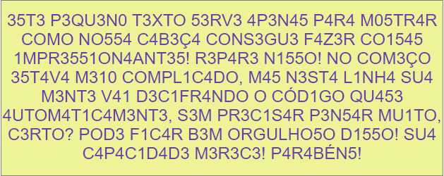

O Matemáticamente é um projeto em evolução planejado para ajudar alunos e professores na aprendizagem e ensino de Matemática básica, de maneira prática e divertida. Alguma vez você já se deparou com as perguntas "porque e para quê estudar Matemática?" ou "quando vai usar um tanto de fórmulas complicadas?". Pois bem, a evolução do mudo deve-se em grande parte a ela, a utilizamos para executar coisas simples do dia a dia que fazemos automaticamente sem preceber e ela não é assim tão complicada.
Existem caminhos mais simples que podemos construir e seguir para alguma finalidade através dela. Esses caminhos exigem pelo menos um conhecimento básico, noções intuitivas ou alguma lógica e assim como qualquer caminho, para atingir o objetivo não podemos desistir quando surgem os problemas. Pensando nos problemas que podemos resolver usando ferramentas matemáticas, estão dispoíveis aqui, conteúdos que podem te ajudar a pensar matematicamente.
Além disso, estes conteúdos podem te ajudar a se preparar melhor para exames e provas que medem desempenho, além de concursos e processos seletivos. Este é o caso do índice MATEMÁTICA BÁSICA do menu. Para os interessados em aplicações descontraídas de conceitos matemáticos, o MATEMÁGICA revela a Matemática por trás de alguns truques. Legal né?! Você pode utilizar também a CALCULADORA CIENTÍFICA disponível para te audar nos seus cálculos. Os conteúdos estão sendo disponibilizados aos poucos, mas já tem bastante coisa para começar a estudar, você consegue! Pense matematicamente, positivamente, integre-se, mas nunca se limite!